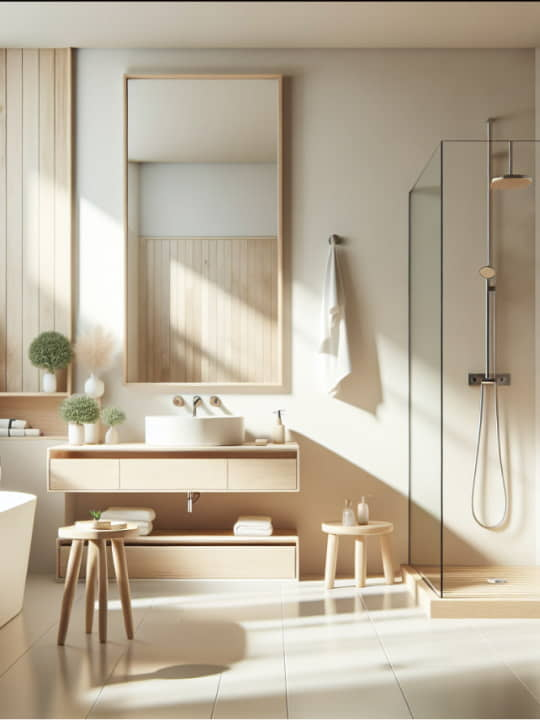
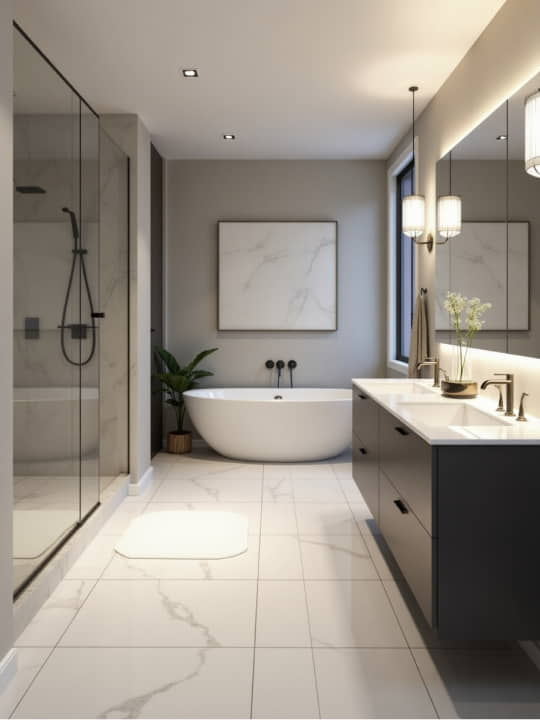
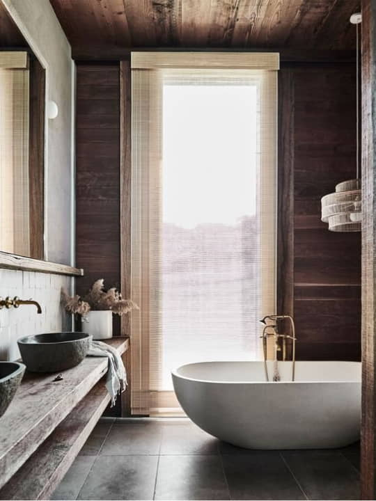
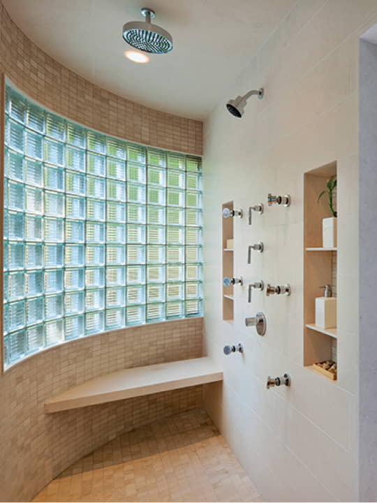
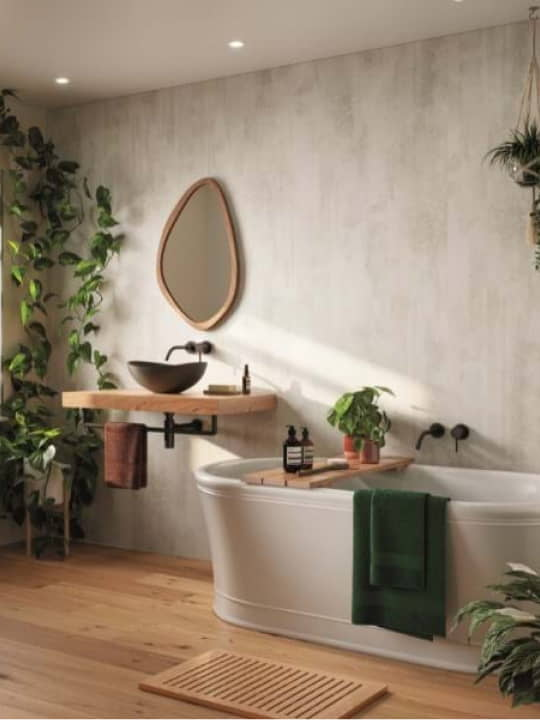

<!--DEV
@ @include('blocks/gallery/gallery.html')
-->

<section class="container  gallery">
  @@include('../../blocks/complex-heading/complex-heading.html', {
    "title": "Gallery",
    "subtitle": "We give our best on each project",
    "intro": ""
  })

  <div class="row  gallery__row">

    <div class="gallery__col">
      <a href="#" class="gallery__item" data-bs-toggle="modal" data-bs-target="#japanese">
        <div class="embed-responsive embed-responsive--3-4">
          <picture>
            <source srcset="img/japanese-1-256w.webp,
                            img/japanese-1-450w.webp 2x" media="(min-width: 1280px)" type="image/webp">
            <source srcset="img/japanese-1-256w.jpg,
                            img/japanese-1-450w.jpg 2x" media="(min-width: 1280px)">
              <!-- 256x341, 384x512 2x -->
            <source srcset="img/japanese-1-540w.webp" media="(min-width: 1024px)" type="image/webp">
            <source srcset="img/japanese-1-540w.jpg" media="(min-width: 1024px)">
              <!-- 540x720 -->
            <source srcset="img/japanese-1-450w.webp" media="(min-width: 768px)" type="image/webp">
            <source srcset="img/japanese-1-450w.jpg" media="(min-width: 768px)">
              <!-- 450x600 -->
            <source srcset="img/japanese-1-450w.webp" media="(min-width: 480px)" type="image/webp">
            <source srcset="img/japanese-1-450w.jpg" media="(min-width: 480px)">
              <!-- 400x533 -->
            <source srcset="img/japanese-1-540w.webp" media="(min-width: 320px)" type="image/webp">
            <source srcset="img/japanese-1-540w.jpg" media="(min-width: 320px)">
              <!-- 515x687 -->
            
          </picture>
        </div>
        <span class="subtitle">Japanese</span>
      </a>
    </div>

    <div class="gallery__col">
      <a href="#" class="gallery__item" data-bs-toggle="modal" data-bs-target="#scandinavian">
        <div class="embed-responsive embed-responsive--3-4">
          <picture>
            <source srcset="img/scandinavian-1-256w.webp,
                            img/scandinavian-1-450w.webp 2x" media="(min-width: 1280px)" type="image/webp">
            <source srcset="img/scandinavian-1-256w.jpg,
                            img/scandinavian-1-450w.jpg 2x" media="(min-width: 1280px)">
              <!-- 256x341, 384x512 2x -->
            <source srcset="img/scandinavian-1-540w.webp" media="(min-width: 1024px)" type="image/webp">
            <source srcset="img/scandinavian-1-540w.jpg" media="(min-width: 1024px)">
              <!-- 540x720 -->
            <source srcset="img/scandinavian-1-450w.webp" media="(min-width: 768px)" type="image/webp">
            <source srcset="img/scandinavian-1-450w.jpg" media="(min-width: 768px)">
              <!-- 450x600 -->
            <source srcset="img/scandinavian-1-450w.webp" media="(min-width: 480px)" type="image/webp">
            <source srcset="img/scandinavian-1-450w.jpg" media="(min-width: 480px)">
              <!-- 400x533 -->
            <source srcset="img/scandinavian-1-540w.webp" media="(min-width: 320px)" type="image/webp">
            <source srcset="img/scandinavian-1-540w.jpg" media="(min-width: 320px)">
              <!-- 515x687 -->
            
          </picture>
        </div>
        <span class="subtitle">Scandinavian</span>
      </a>
    </div>

    <div class="gallery__col">
      <a href="#" class="gallery__item" data-bs-toggle="modal" data-bs-target="#modern">
        <div class="embed-responsive embed-responsive--3-4">
          <picture>
            <source srcset="img/modern-1-256w.webp,
                            img/modern-1-450w.webp 2x" media="(min-width: 1280px)" type="image/webp">
            <source srcset="img/modern-1-256w.jpg,
                            img/modern-1-450w.jpg 2x" media="(min-width: 1280px)">
              <!-- 256x341, 384x512 2x -->
            <source srcset="img/modern-1-540w.webp" media="(min-width: 1024px)" type="image/webp">
            <source srcset="img/modern-1-540w.jpg" media="(min-width: 1024px)">
              <!-- 540x720 -->
            <source srcset="img/modern-1-450w.webp" media="(min-width: 768px)" type="image/webp">
            <source srcset="img/modern-1-450w.jpg" media="(min-width: 768px)">
              <!-- 450x600 -->
            <source srcset="img/modern-1-450w.webp" media="(min-width: 480px)" type="image/webp">
            <source srcset="img/modern-1-450w.jpg" media="(min-width: 480px)">
              <!-- 400x533 -->
            <source srcset="img/modern-1-540w.webp" media="(min-width: 320px)" type="image/webp">
            <source srcset="img/modern-1-540w.jpg" media="(min-width: 320px)">
              <!-- 515x687 -->
            
          </picture>
        </div>
        <span class="subtitle">Modern</span>
      </a>
    </div>

    <div class="gallery__col">
      <a href="#" class="gallery__item" data-bs-toggle="modal" data-bs-target="#minimalistic">
        <div class="embed-responsive embed-responsive--3-4">
          <picture>
            <source srcset="img/minimalistic-1-256w.webp,
                            img/minimalistic-1-450w.webp 2x" media="(min-width: 1280px)" type="image/webp">
            <source srcset="img/minimalistic-1-256w.jpg,
                            img/minimalistic-1-450w.jpg 2x" media="(min-width: 1280px)">
              <!-- 256x341, 384x512 2x -->
            <source srcset="img/minimalistic-1-540w.webp" media="(min-width: 1024px)" type="image/webp">
            <source srcset="img/minimalistic-1-540w.jpg" media="(min-width: 1024px)">
              <!-- 540x720 -->
            <source srcset="img/minimalistic-1-450w.webp" media="(min-width: 768px)" type="image/webp">
            <source srcset="img/minimalistic-1-450w.jpg" media="(min-width: 768px)">
              <!-- 450x600 -->
            <source srcset="img/minimalistic-1-450w.webp" media="(min-width: 480px)" type="image/webp">
            <source srcset="img/minimalistic-1-450w.jpg" media="(min-width: 480px)">
              <!-- 400x533 -->
            <source srcset="img/minimalistic-1-540w.webp" media="(min-width: 320px)" type="image/webp">
            <source srcset="img/minimalistic-1-540w.jpg" media="(min-width: 320px)">
              <!-- 515x687 -->
            
          </picture>
        </div>
        <span class="subtitle">Ultra Minimalism</span>
      </a>
    </div>

    <div class="gallery__col">
      <a href="#" class="gallery__item" data-bs-toggle="modal" data-bs-target="#wood-and-glass">
        <div class="embed-responsive embed-responsive--3-4">
          <picture>
            <source srcset="img/wood-and-glass-1-256w.webp,
                            img/wood-and-glass-1-450w.webp 2x" media="(min-width: 1280px)" type="image/webp">
            <source srcset="img/wood-and-glass-1-256w.jpg,
                            img/wood-and-glass-1-450w.jpg 2x" media="(min-width: 1280px)">
              <!-- 256x341, 384x512 2x -->
            <source srcset="img/wood-and-glass-1-540w.webp" media="(min-width: 1024px)" type="image/webp">
            <source srcset="img/wood-and-glass-1-540w.jpg" media="(min-width: 1024px)">
              <!-- 540x720 -->
            <source srcset="img/wood-and-glass-1-450w.webp" media="(min-width: 768px)" type="image/webp">
            <source srcset="img/wood-and-glass-1-450w.jpg" media="(min-width: 768px)">
              <!-- 450x600 -->
            <source srcset="img/wood-and-glass-1-450w.webp" media="(min-width: 480px)" type="image/webp">
            <source srcset="img/wood-and-glass-1-450w.jpg" media="(min-width: 480px)">
              <!-- 400x533 -->
            <source srcset="img/wood-and-glass-1-540w.webp" media="(min-width: 320px)" type="image/webp">
            <source srcset="img/wood-and-glass-1-540w.jpg" media="(min-width: 320px)">
              <!-- 515x687 -->
            
          </picture>
        </div>
        <span class="subtitle">Wood and Glass</span>
      </a>
    </div>

    <div class="gallery__col">
      <a href="#" class="gallery__item" data-bs-toggle="modal" data-bs-target="#spa">
        <div class="embed-responsive embed-responsive--3-4">
          <picture>
            <source srcset="img/spa-1-256w.webp,
                            img/spa-1-450w.webp 2x" media="(min-width: 1280px)" type="image/webp">
            <source srcset="img/spa-1-256w.jpg,
                            img/spa-1-450w.jpg 2x" media="(min-width: 1280px)">
              <!-- 256x341, 384x512 2x -->
            <source srcset="img/spa-1-540w.webp" media="(min-width: 1024px)" type="image/webp">
            <source srcset="img/spa-1-540w.jpg" media="(min-width: 1024px)">
              <!-- 540x720 -->
            <source srcset="img/spa-1-450w.webp" media="(min-width: 768px)" type="image/webp">
            <source srcset="img/spa-1-450w.jpg" media="(min-width: 768px)">
              <!-- 450x600 -->
            <source srcset="img/spa-1-450w.webp" media="(min-width: 480px)" type="image/webp">
            <source srcset="img/spa-1-450w.jpg" media="(min-width: 480px)">
              <!-- 400x533 -->
            <source srcset="img/spa-1-540w.webp" media="(min-width: 320px)" type="image/webp">
            <source srcset="img/spa-1-540w.jpg" media="(min-width: 320px)">
              <!-- 515x687 -->
            
          </picture>
        </div>
        <span class="subtitle">Spa Like</span>
      </a>
    </div>

    <div class="gallery__col">
      <a href="#" class="gallery__item" data-bs-toggle="modal" data-bs-target="#biophilic">
        <div class="embed-responsive embed-responsive--3-4">
          <picture>
            <source srcset="img/biophilic-1-256w.webp,
                            img/biophilic-1-450w.webp 2x" media="(min-width: 1280px)" type="image/webp">
            <source srcset="img/biophilic-1-256w.jpg,
                            img/biophilic-1-450w.jpg 2x" media="(min-width: 1280px)">
              <!-- 256x341, 384x512 2x -->
            <source srcset="img/biophilic-1-540w.webp" media="(min-width: 1024px)" type="image/webp">
            <source srcset="img/biophilic-1-540w.jpg" media="(min-width: 1024px)">
              <!-- 540x720 -->
            <source srcset="img/biophilic-1-450w.webp" media="(min-width: 768px)" type="image/webp">
            <source srcset="img/biophilic-1-450w.jpg" media="(min-width: 768px)">
              <!-- 450x600 -->
            <source srcset="img/biophilic-1-450w.webp" media="(min-width: 480px)" type="image/webp">
            <source srcset="img/biophilic-1-450w.jpg" media="(min-width: 480px)">
              <!-- 400x533 -->
            <source srcset="img/biophilic-1-540w.webp" media="(min-width: 320px)" type="image/webp">
            <source srcset="img/biophilic-1-540w.jpg" media="(min-width: 320px)">
              <!-- 515x687 -->
            
          </picture>
        </div>
        <span class="subtitle">Biophilic</span>
      </a>
    </div>

    <div class="gallery__col">
      <a href="#" class="gallery__item" data-bs-toggle="modal" data-bs-target="#natural">
        <div class="embed-responsive embed-responsive--3-4">
          <picture>
            <source srcset="img/natural-1-256w.webp,
                            img/natural-1-450w.webp 2x" media="(min-width: 1280px)" type="image/webp">
            <source srcset="img/natural-1-256w.jpg,
                            img/natural-1-450w.jpg 2x" media="(min-width: 1280px)">
              <!-- 256x341, 384x512 2x -->
            <source srcset="img/natural-1-540w.webp" media="(min-width: 1024px)" type="image/webp">
            <source srcset="img/natural-1-540w.jpg" media="(min-width: 1024px)">
              <!-- 540x720 -->
            <source srcset="img/natural-1-450w.webp" media="(min-width: 768px)" type="image/webp">
            <source srcset="img/natural-1-450w.jpg" media="(min-width: 768px)">
              <!-- 450x600 -->
            <source srcset="img/natural-1-450w.webp" media="(min-width: 480px)" type="image/webp">
            <source srcset="img/natural-1-450w.jpg" media="(min-width: 480px)">
              <!-- 400x533 -->
            <source srcset="img/natural-1-540w.webp" media="(min-width: 320px)" type="image/webp">
            <source srcset="img/natural-1-540w.jpg" media="(min-width: 320px)">
              <!-- 515x687 -->
            
          </picture>
        </div>
        <span class="subtitle">Natural Material</span>
      </a>
    </div>

  </div>
</section>
